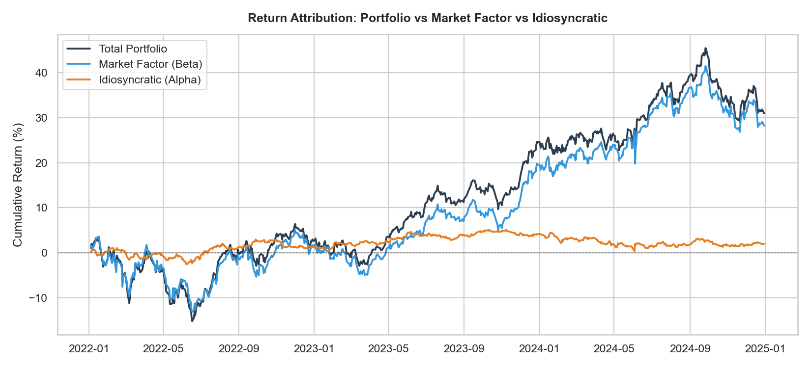
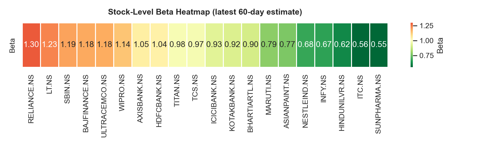
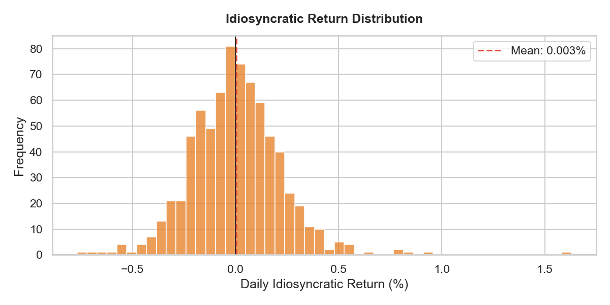

The question
Every fund manager, every analyst, every investor who's picked stocks believes they have some edge. The market went up, their portfolio went up more — so there must be skill involved. But how much of that outperformance is actually stock-selection, and how much is just the market carrying everything higher?
This is a surprisingly hard question to answer cleanly. I wanted to build a tool that did it properly: take a real portfolio on real data, separate the market component from the stock-specific component, and measure both. The methodology is called return attribution — it's standard practice in fund management but rarely done rigorously at the individual investor level.
91 cents out of every rupee came from the index
The portfolio returned 30.97% over three years (Jan 2022 – Dec 2024). When you decompose that into market-driven and stock-specific components, the split is stark:
Total return: +30.97%
Market factor (beta-driven): +28.22%
Idiosyncratic (stock selection): +1.98%
91% of the return came from just owning the market.


The idiosyncratic Sharpe — 0.21 — tells you something uncomfortable: the stock-specific return wasn't very well compensated for the risk taken to get it. A passive index fund would have given you Sharpe 0.71 with no selection required. The 20-stock selection process added 1.98% of return over three years, while introducing stock-specific volatility that dragged the Sharpe down.
None of this means stock selection is pointless. But it does set a baseline: before claiming alpha, you need to strip out the market component first. Most "outperformance" claims don't do this carefully — they compare gross returns in a rising market without separating what the market handed to everyone.
Beta isn't stable — and that matters in a crisis
The analysis uses rolling 60-day Beta estimates, meaning Beta is recalculated continuously as the market evolves. What the rolling Beta chart shows is that the relationship between individual stocks and the market isn't fixed — it shifts, sometimes substantially, and particularly during stress periods.


This matters because portfolio hedging decisions are made based on estimated Beta. If you bought a hedge based on June's Beta and the crisis comes in October, the Beta has already shifted. In the 2022 drawdown period, correlations across stocks spiked and Betas moved — the portfolio behaved more like a concentrated market bet than the diversified holdings it appeared to be on paper.
This is one of the well-documented but underappreciated dynamics in equities: in a crash, everything becomes correlated. The diversification benefit shrinks precisely when you need it most.
The diversification you think you have vs. the diversification you actually have
By any standard measure, the equal-weight 20-stock portfolio is well-diversified. The Herfindahl-Hirschman Index (HHI) — a standard concentration metric — comes out at 0.05, which corresponds to the equivalent of 20 perfectly equal positions. Nothing is outsized.

But that diversification is measured by position count. The sector breakdown tells a different story: 30% of the portfolio is in Financials (6 stocks). In a banking sector shock, those 6 stocks won't diversify each other much — they'll move together because they're driven by the same underlying factors (rate decisions, credit cycles, regulatory news). The apparent position-level diversification hides a meaningful sector concentration.
This is the difference between diversification by count and diversification by risk factor. A portfolio can look perfectly spread on paper while being highly concentrated in a single economic driver. The only way to see this is to decompose the exposure — which is exactly what attribution frameworks are built to do.
What this made me think about
The result I expected going in was that most return would be market-driven. The result I didn't fully expect was how clearly the data shows the gap between measured diversification and experienced diversification during stress — and how little the stock selection process actually contributed to Sharpe once you strip out the market component.
The honest implication: for anyone managing a portfolio of listed equities, the first question before evaluating performance should be "what did the market contribute?" If you can't answer that, you can't say anything meaningful about whether you've added value.